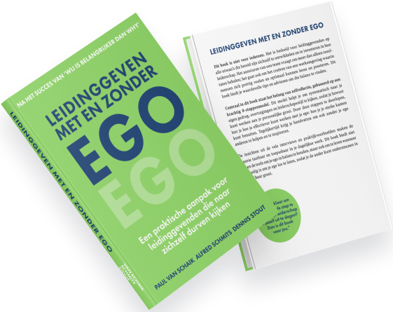

Leidinggeven
met en zonder ego
Een praktische training voor leidinggevende die naar zichzelf durven kijken

Een praktische training voor leidinggevende die naar zichzelf durven kijken
Wij helpen leiders van alle niveaus om de principes uit Leidinggeven met en Zonder Ego in de praktijk te brengen. We leren je leidinggeven op de gulde middenweg van controle en loslaten. Je leert op een diep niveau wisselen tussen directief en dienstbaar leidinggeven, waardoor je dat gaat doen wat nodig is om een team naar duurzame prestaties te leiden. Ben jij klaar om de volgende stap te zetten in je leiderschap en jezelf uit te dagen?
CONTACTDan passen onze lezingen en trainingen bij jou!
INSCHRIJVENBenieuwd naar de ervaringen van andere leidinggevenden na het volgen van de training Leiding geven met en zonder Ego van Stefanie van Boekel?
TERUGBELVERZOEK?Leidinggevenden die elke dag enthousiast en gemotiveerd zijn.
Leidinggevenden die innovatie stimuleren en een hoge productiviteit behouden.
Leidinggevenden die een samenwerkende omgeving bevorderen waar teamleden elkaar ondersteunen en versterken.
Leidinggevenden die grenzen verleggen en voortdurend uitstekende resultaten behalen.
Plan dan een vrijblijvende kennismaking dan maken we samen helder waar je me geholpen bent.
KENNISMAKING PLANNENWe kunnen jou als leidinggevende trainen, maar vaak is het effectiever, waardevoller en leuker om een groter deel van je organisatie mee te nemen. Zo spreek je dezelfde taal en begrijp je beter van elkaar wat je doet. Hoewel de 8 stappen uit Leidinggeven met en zonder Ego de basis vormen, is wat jouw organisatie echt verder gaat brengen uniek. Neem gerust contact op, dan kijken we samen wat jij wilt bereiken, zowel als persoon als vanuit je functie, en hoe de organisatie daar het meest mee geholpen is.

 GRATIS
GRATIS
BOEK DE TRAINING
Ben jij klaar met gedoe, ontevreden personeel en wil je graag fluitend naar je werk? Wil jij teams boven zichzelf uit laten stijgen? Dat ze hun werk ten diepste zinvol vinden, hun kwaliteiten inzetten en voldoening ervaren? Wil je bezig zijn met het grotere plaatje in plaats van brandjes blussen? Wordt een geloofwaardig leider die impact maakt: zorg voor tevreden klanten, een lekkere samenwerking en veel werkplezier.
We werken met het 8-stappenmodel uit Leidinggeven met en zonder Ego dat is onderverdeeld in 3 fases. Met deze methode leer je hoe je als kapitein de juiste balans creëert tussen het zetten van de koers en vertrouwen op de bemanning, waardoor je samen en met plezier de stip aan de horizon bereikt en verder kan komen dan ooit van het team of de organisatie werd verwacht.
DEEL 1
DEEL 2
DEEL 3
Alfred, auteur van Leidinggeven met en zonder Ego, heeft tientallen jaren ervaring in leiderschapstraining en het begeleiden van prestatieverbeteringen binnen organisaties. Naast bestuurservaring heeft hij strategische ontwikkelingsprogramma's ontwikkeld en begeleid voor de top van bedrijven. Stefanie is expert in het aanpakken van stress en burn-out in organisaties en heeft uitgebreide ervaring met ervaringsgericht leren, waarbij deelnemers niet alleen met hun hoofd leren, maar een diepe leerervaring krijgen door ook met hun lijf te leren.
Samen zijn ze geen traditioneel adviesbureau. Ze zijn helder, hebben lef, en staan altijd naast je. Ze bieden een persoonlijke en efficiënte aanpak die je tijd bespaart: je hebt altijd rechtstreeks contact met hun. De trainingen zijn bovendien relatief goedkoop, door een slimme constructie van klein blijven, wat ze uiterst flexibel maakt.
PLAN KENNISMAKINGWat ons anders maakt dan anderen
Wil jij praktische tips om jouw leiderschap naar een hoger niveau te tillen? Ontvang regelmatig korte achtergrondartikelen en blijf op de hoogte van de ontwikkelingen van de training Leidinggeven met en zonder Ego.
KENNISMAKEN
We behandelen uw e-mailadres met zorg: het wordt nooit gedeeld met derden of gebruikt voor andere doeleinden.